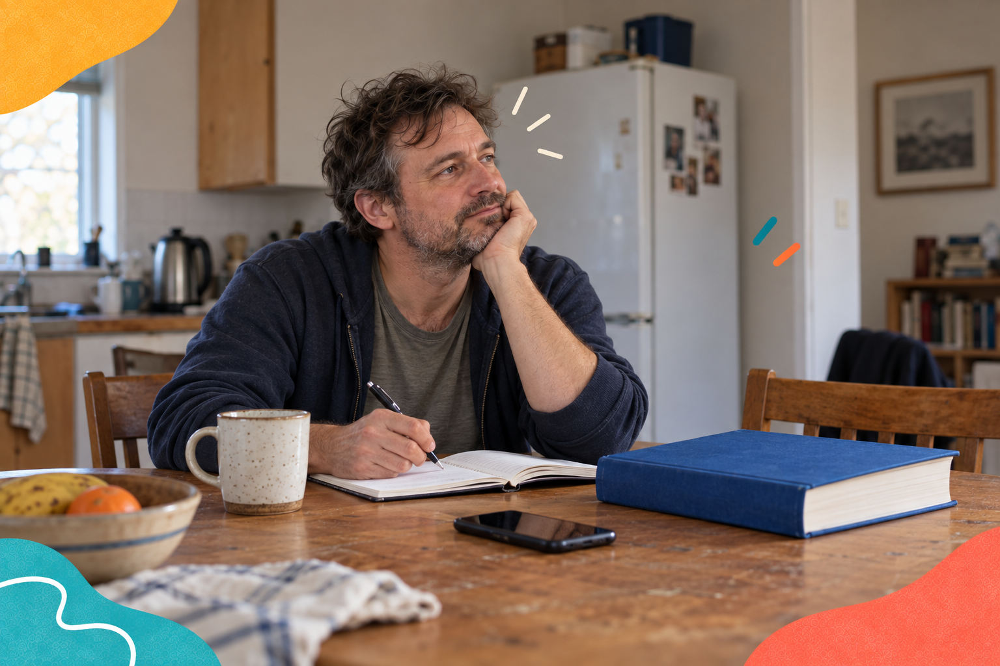

You don’t need a diagnosis.
You don’t need to know exactly what support you need before contacting us. A task that feels difficult is enough of a starting point.
No boxes to tick
You do not need to be “bad with technology” to ask for help.

You don’t need to know exactly what support you need before contacting us. A task that feels difficult is enough of a starting point.
Happyish may be useful if you lack confidence with technology, experience digital exclusion, are neurodivergent or disabled, or find online systems confusing.
You might be returning to work or education, rebuilding after a difficult period, in recovery, or trying to organise everyday digital tasks. You might simply want to understand AI without the hype.
Tell us what makes things easier: shorter steps, repetition, a written reminder or a quieter way to communicate. We’ll discuss what we can offer honestly.
A conversation is a good beginning
Tell us what you’re trying to do. We’ll work out the next step together.
Need a hand? Talk to us.